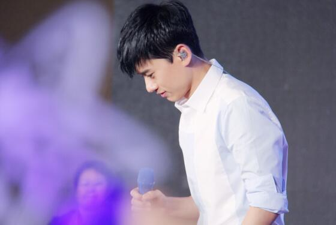

2004年11月18日，“蓝天下的至爱”慈善演出。
2005年9月17日，上海国际田径黄金大奖赛慈善拍卖会。
2006年10月16日，上海《闪电星感动》慈善节目录制。12月16日爱在MY RADIO慈善募捐晚会。
2008年，2月3日北京《故乡的云海峡的风》慈善晚会录制中国大使；2月5日湖南《爱心大融冰》赈灾访谈；2月5日湖南赈灾晚会节目录制；5月14日，湖南参加百名歌星赈灾义演；5月18日，张杰亲赴四川红十字会向汶川地震灾区捐款10万元；5月23，日湖南《孩子，我们爱你》慈善晚会录制；5月26日录制湖南首支赈灾公益歌曲《我们一定赢》；5月30，日四川卫视《以生命的名义》抗震救灾节目；6月01日，四川拍摄赈灾宣传片；6月02日，湖南湘雅医院看望四川地震灾区转移的伤员；6月05日，四川《鲁豫有约》北川中学慈善活动；6月08日，四川参加湖南卫视赈灾晚会；6月10日 贵州中歌榜爱心歌友会；6月14日，湖南卫视慈善晚会；9月22日，中信国安慈善之夜；11月14日，东南卫视《海峡传情》慈善节目录制。
2009年4月3日，他参与济南《天下无双》“博爱在齐鲁”大型公益群星演唱会；5月7日，他为彬伊奴品牌代言并降低代言费20万捐赠物资给四川地震灾区；5月10日，他参加壹基金慈善徒步走活动；5月12日，他在汶川大地震孤残儿童救助专项基金慈善答谢晚宴献唱；12月14日，他在MusicRadio爱的5003工程慈善晚会献唱，并现场捐助十个孩子三年生活费。
2010年1月24日，他与星星前往资助的重庆市沙坪坝区聋哑学校看望孩子；4月22日，他通过中国扶贫基金向玉树捐款10万元；9月15日，张杰参加“我要上学”MR启动仪式；10月28日，张杰参加“我要上学—Kappa1200助学行动”探访之旅；12月4日，张杰作为唯一的公益明星“心义工代表”出席中国扶贫基金会全民公益论坛之全民公益启动大会；12月11日，张杰参加唐山三元爱心捐助；12月20日，张杰参加Music Radio“我要上学”慈善演唱会。
2011年9月27日，张杰夫妇与加措活佛-慈爱基金一起与香格里拉尼史村协定负责出资重建小学，为这里的孤儿及贫困家庭的孩子提供免费的学前班及小学阶段教育。经过短短40多天的努力，该爱心小学于2011年11月10日开学；10月，张杰夫妇资助了20位迪庆州当年录取的少数民族贫困大学生，并捐助184167元帮助迪庆当地普利藏文学校吾努分校的重建和装修工作；10月9日，张杰参加了“暖秋重阳”韩红爱心赴京郊为孤寡老人义诊和捐助活动；12月3日参加由“中国人口福利基金会慈爱基金”在北京举办的首届“爱·无界”慈善午宴，张杰现场演唱了《这就是爱》，并在慈善拍卖环节踊跃竞拍，花费20万拍下了由孙楠捐出的合成器，并出价32万积极参与竞拍王菲捐出的爱马仕演出服。拍卖所得的收益“中国人口福利基金会慈爱基金”将用于“慈爱家园”项目，以帮助改善贫困地区儿童教育，推动残疾人事业发展等；12月19日，他参加由中央人民广播电台MusicRadio音乐之声与中国儿童少年基会共同举办的“2011MusicRadio我要上学1200助学行动”之“为你加油爱心演唱会”，演唱两首表达爱和信仰的歌曲，并现场捐助100位学生三年的生活费计12万元 。
2012年3月2日，他参加湖南卫视举办的《我们都是活雷锋》公益特别节目；4月2日“世界自闭症日”，张杰受邀担任自闭症爱心大使，出席北京地区“蓝色行动，点亮蓝灯”大型关爱自闭症儿童公益活动，并在北京世茂分会场举办专辑慈善签售活动，每签出一张有5元捐助“星星雨”点亮蓝灯计划。同年5月26日，他参加云南德宏州在京举办的、旨在帮助受毒品和爱滋病危害孤儿的“圆愿关爱基金”推进会。同年5月27日，他出席2012年第四届“嫣然天使基金慈善晚宴”&北京嫣然天使儿童医院成立庆典，现场献唱《这，就是爱》，获颁2012年度“嫣然之星”奖，并认捐嫣然天使儿童医院的病房。
2012年7月17日，张杰向北斗星空爱心基金捐赠200万张杰向中国人口福利基金会捐资200万元用作北斗星空爱心基金的创始资金。北斗星空爱心基金旨在关注青少年文化教育，促进其健康快乐成长，扶弱济困，组织和实施有利于青少年发展的公益活动。同年11月30日起，他担任“康王爱心公益大使”，携手康王继续努力致力于公益践行。同年12月9日，“孩子，我们爱你”中国儿童少年基金会2012大型慈善表彰晚会在北京首都体育馆举办，现场表彰2012年为中国儿童慈善事业作出突出贡献的单位和个人，张杰因多年资助贫困地区孩子获得全国妇联、中国儿童少年基金会颁发的“中国儿童慈善奖——突出贡献奖”。
2013年4月20日，四川雅安地震后，作为北斗星空爱心基金的出资发起人和管委会主任，张杰第一时间与基金管委会成员召开电话会议，了解了灾区的需要和最合适的运输渠道，并先后携北斗星空爱心基金采购和运送40多万元的救灾物资送往灾区芦山县阳镇城社区沙坝小区四组、思延乡铜头村和龙门乡红星村。同年4月28日，他参加四川卫视 《中国爱》4.20芦山强烈地震大型公益特别节目。同年5月27日，他参加“嫣然天使基金会2013香港慈善晚宴”，作为“2012年嫣然之星”张杰和邓超一起代表基金会向赵薇和快乐家族颁发“2013年嫣然之星”荣誉，并作为助拍嘉宾现场清唱为雕塑家陈文令先生捐赠的作品“游戏”助拍。同年12月8日，张杰参加了中国儿童少年基金会和中央人民广播电台音乐之声主办的“2013 MusicRadio我要上学 海马汽车爱·回家助学行动爱心晚会”，并与妻子共同资助50名贫困地区留守儿童，并捐助一所“留守儿童之家”共计11万元。同年12月16日，张杰亲赴广西省大化瑶族自治县实验小学参加第十八间张杰音乐梦想教室的捐赠授牌仪式。
2014年8月与妻子谢娜通过慈爱基金共同向鲁甸灾区捐赠帐篷800顶，16日零酬劳参与南京青奥会开幕式的表演，与张靓颖、韩国演员金秀贤、俄罗斯歌手噶丽娅在开幕式现场演唱主题曲《点亮未来》。同年9月，与谭晶一起赴天津蓟县白涧镇天平庄凯德希望小学与“张杰音乐梦想教室”的孩子一起提前过中秋，9月19日出席“2014BAZAAR明星慈善夜”并与谭晶联手黄晓明等现场演唱了专为“2014BAZAAR明星慈善夜”量身打造的主题曲《爱的光芒》。
2015年1月26日，由张杰捐资200万作为启动资金设立的北斗星空爱心基金下设立的“张杰音乐梦想教室”公益项目在“2014环球风尚·年度盛典”上获“年度十大风尚榜样奖”。